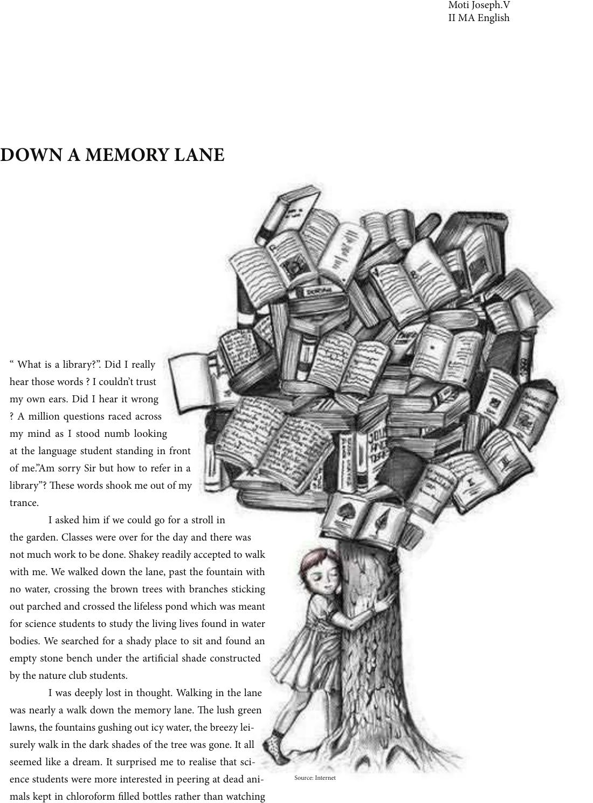

“ What is a library?”. Did I really
hear those words ? I couldn’t trust
my own ears. Did I hear it wrong
? A million questions raced across
my mind as I stood numb looking
at the language student standing in front
of me.”Am sorry Sir but how to refer in a
library”? ese words shook me out of my
trance.
I asked him if we could go for a stroll in
the garden. Classes were over for the day and there was
not much work to be done. Shakey readily accepted to walk
with me. We walked down the lane, past the fountain with
no water, crossing the brown trees with branches sticking
out parched and crossed the lifeless pond which was meant
for science students to study the living lives found in water
bodies. We searched for a shady place to sit and found an
empty stone bench under the articial shade constructed
by the nature club students.
I was deeply lost in thought. Walking in the lane
was nearly a walk down the memory lane. e lush green
lawns, the fountains gushing out icy water, the breezy lei-
surely walk in the dark shades of the tree was gone. It all
seemed like a dream. It surprised me to realise that sci-
ence students were more interested in peering at dead ani-
mals kept in chloroform lled bottles rather than watching
DOWN A MEMORY LANE
Moti Joseph.V
II MA English
Source: Internet